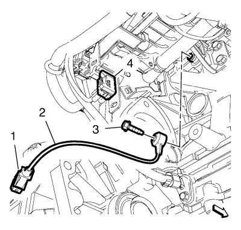

Orlando
Sustitución del sensor de picado 1
Procedimiento de desmontaje
Desconecte el cable negativo de la batería. Consultar
Desconexión y conexión del cable negativo de la batería
.
Desmontar la pantalla de protección del motor. Consultar
Sustitución del protector del motor
.
Elevar el vehículo y soportarlo de manera segura. Consultar
Elevación y soporte en alto del vehículo
.
Desmonte el aislante del compartimento delantero. Consultar
Sustitución del aislamiento del compartimento delantero
.
Desmonte el motor de arranque. Consultar
Sustitución del motor de arranque
:
2.0L Diésel LNP con MT
→
2.0L Diésel LNP con AT
→
1.6L LDE, LXV, 1.8L 2H0 y LUW
.

Retire el enchufe del mazo de cables del sensor de picado (1) del enchufe del mazo de cables (4).
Desmonte el tornillo del sensor de picado (3).
Desmonte el sensor de picado (2).
Procedimiento de montaje
Monte el sensor de picado (2).
Monte el tornillo del sensor de picado (3) y apriételo a
25 N·m (18 lib. pie)
.
Monte el enchufe del mazo de cables del sensor de picado (1) en el enchufe del mazo de cables (4).
Instale el motor de arranque. Consultar
Sustitución del motor de arranque
:
2.0L Diésel LNP con MT
→
2.0L Diésel LNP con AT
→
1.6L LDE, LXV, 1.8L 2H0 y LUW
.
Monte el aislante del compartimento delantero. Consultar
Sustitución del aislamiento del compartimento delantero
.
Bajar el vehículo.
Monte el protector del motor. Consultar
Sustitución del protector del motor
.
Conecte el cable negativo de la batería. Consultar
Desconexión y conexión del cable negativo de la batería
.
© Copyright Chevrolet. All rights reserved